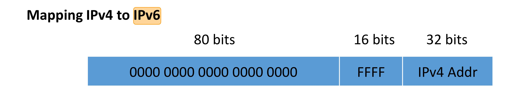

计算机网络复习
OSI (Open Systems Interconnection) 参考模型和 TCP/IP 模型
TCP/IP 四层模型的代表协议：
- 网络接口层（Link Layer）：ARP 协议（IP addr —ARP—>MAC addr）
- IP 网络层（Internet Layer）：IP、ICMP、IGMP 等协议。
- 传输层（Transport Layer）：TCP 和 UDP 协议
- 应用层（Application Layer）：HTTP、SMTP、DNS、FTP、SSH、DHCP、Telnet
数据传输单位：
- 物理层：比特
- 数据链路层：帧
- 网络层：数据报
- 传输层：报文段（TCP）、用户数据报（UDP）
TCP/IP 四层结构有什么优缺点？
优点：
- TCP/IP 在设计之初就考虑到了多种异构网的互联问题，并将 IP 作为一个单独的重要层次。
缺点：
- 它在服务、接口与协议的区别上不清楚。
- TCP/IP 的主机－网络层本身并不是实际的一层，它定义了网络层与数据链路层的接口。物理层与数据链路层的划分是必要和合理的，一个好的参考模型应该将它们区分开来，而 TCP/IP 参考模型却没有做到这点。
OSI 七层模型的优缺点？
优点：
- OSI 参考模型的最大贡献就是精确定义了三个主要概念：服务、接口和协议。这与现代的面向对象程序设计思想非常吻合。
- OSI 参考模型产生在协议发明之前，通用性较好。
2. TCP 的拥塞控制
2.1 慢启动
慢启动机制
- 初始窗口 initial cwnd，初始值设置为 3 或 10
- 慢启动门限值 ssthresh，初始值设置为 1 « 31
- 每收到 ACK，窗口值加 1
慢启动并不慢
- 在没有丢包情况下，经过 log2(target_cwnd/initial_cwnd) 个 RTT 长到目标窗口大小
Initialization:
cwnd <- initial cwnd
if cwnd < ssthresh:
for each ack:
cwnd += 1
else:
for each ack:
cwnd += 1/cwnd
when encountering loss:
ssthresh <- cwnd
cwnd <- cwnd/2
TCP 锯齿状窗口行为。
2.2 快速重传
- 一般情况下，先发送的数据包应该先到达。如果后发送的数据包先被确认，可推测先发送的数据包丢失。
- 如果一个数据包后面的三个数据包都被确认，而该数据包还未收到确认，则认定该数据包丢失，并重传该数据包。
- 数据包通常都是连续发送的。快速重传通常可以在 1 个 RTT 内重传数据丢包。
为什么需要等 3 个后续数据包的确认?
- 防止因数据包乱序引起的误重传
- 在无线网络、多路径传输中会有部分乱序
- 假设网络中乱序长度不大于 3 个数据包
- 通过 D-SACK 机制 (Duplicate SACK) 识别一个数据包没有丢失，而是乱序。
一般来说，快速重传可以恢复长流中的大部分丢包。
3.2 超时重传
-
重传后丢包，即同一数据包被丢弃两次后，只能等待超时重传。
-
通过超时来判断数据包丢失
-
定时器至少大于一个 RTT (Round Trip Time)
-
定时器必须能够适应 RTT 变化，定时器必须同时反映出 RTT 大小和 RTT 变化
-
Linux 中最小值为 200ms
3.3 避免拥塞
流控（Flow Control）：
- 为了防止快发送方给慢接收方发数据造成接收崩溃。注意与拥塞控制的区别。
- 发送方和接收方各自维护一个窗口大小
两种拥塞控制思路：
- 端到端的拥塞控制：端设备通过丢包、延迟变化 等推测网络拥塞状况。TCP 使用端到端的拥塞控制策略。
- 网络辅助的拥塞控制：网络设备对端设备提供反馈。
TCP 的拥塞控制算法基础：
- (1) TCP 端设备遇到丢包时，认为网络拥塞，减慢发送速率（发送速率（窗口大小）减半）
- (2) TCP 端设备定期通过增大发送速率来探测更多可用带宽（每个 RTT，窗口值增加一个数据包大小）
✅ 3.4 几种拥塞控制的方法总结
RFC 2581 定义了进行拥塞控制的四种算法，即慢开始（slow-start）、拥塞避免（congestion avoidance）、快重传（fast retransmit）和快恢复（fast recovery）。
（1）慢开始（slow-start）和拥塞避免（congestion avoidance）
（2）快重传（fast retransmit）和快恢复（fast recovery）
发送方只要一连收到三个重复确认就应当立即重传对方尚未收到的报文段 M3，而不必继续等待为 M3 设置的重传计时器到期。
快恢复（fast recovery）门限 ssthresh = cwnd / 2; cwnd = ssthresh;
4. 简述从输入网页网址到获得相关网页内容的步骤
（1）浏览器根据 DNS（Domain Name System，域名系统）服务器返回的真实地址请求网页，DNS 主要负责把对人类友好的网址转换为对机器友好的 IP 地址。
（2）浏览器请求计算机建立对这个 IP 地址的标准 Web 端口（80）或标准安全 Web 端口（443）的TCP（Transmission Control Protocol，传输控制协议）连接。
（3）当浏览器连接到 Web 服务器之后会请求网站，这一步就要用到 HTTP（或 HTTPS） 了。
（4）服务器会根据请求的 URL 响应相关内容。
（5）Web 浏览器负责处理返回的响应（HTML/CSS/JS）。
（6）Web 浏览器请求自己需要的额外资源。
（7）浏览器在获取了足够的关键资源后，开始在屏幕上渲染页面。
（8）在页面刚刚显示在屏幕上之后，浏览器会在后台继续下载其他资源，并在处理完它们之后更新页面。
（9）当页面完全被加载后，浏览器会停止显示加载图标（在多数浏览器上都位于地址栏旁边），然后触发 OnLoad JavaScript 事件。根据这个事件，JavaScript 就知道可以执行某些操作了。
（10）此时，页面已经完全加载了，但浏览器并不会停止发送请求。网页只包含静态内容的时代早就过去了。
5. HTTPS 过程
-
显然易见的是，非对称加密在性能上不如对称加密，两者各有其优缺点。HTTPS 就是将两者的优点结合起来。更具体的说就是，公钥私钥主要用于传输对称密钥，而真正的双方大量数据量的通信都是通过对称密钥进行的。
-
数字证书用来解决公钥的合法性问题。
-
非对称加密需要通过证书（Certificate）和权威机构 CA（Certificate Authority）来验证公钥的合法性。CA 通过层层授信背书的方式，从而确保了非对称加密模式的正常运转。
我在 HTTPS 服务器的实验中，在数据传输之前，客户端和服务器会获取对方的证书，检查证书的基本信息（因为证书是自己签名的，没有权威 CA，因此不进行证书层层校验，直接认定是一个合法的证书），之后商量好对称密钥，使用对称密钥进行数据传输。
6. 简述区块链的技术原理和应用
6.1 技术原理简述
区块链（Blockchain）是一种创新的分布式交易验证和数据共享技术，也被称为分布式共享总账（Distributed Shared Ledger）。
区块（block）保存：
- （1）业务记录集合（以 hash link 的方式）
- （2）前序块的哈希值（数字摘要）
- （3）(1+2) 的哈希值（数字摘要）。
每个记录中有发起者的数字签名，保证操作的不可伪造性和不可抵赖性。
链（chain），就是逻辑上由 “ (2) 前序块的哈希值” 串联起来的链条，保证不可删除、时序性和不可篡改特性。
后块为所有的前块背书，起到 “联保” 作用， 这样的数据结构即使是最初发布数据的人也不能改动他自己的数据了。
区块链解决的核心和本质问题是：无可信中心机构时，如何在信息不对称、不确定的环境下，建立满足活动赖以发生、发展的“信任”生态体系，即 “拜占庭容错”或者“两军问题”。
6.2 应用简述
区块链技术的适用场景：
- 多方参与
- 缺乏统一信任主体
- 存在价值流通或信任传递
工信部《中国区块链技术和应用发展白皮书》
区块链热点应用案例：
- 供应链金融，现有问题：造假风险、企业信息孤岛、履约风险高。
- 支付、清算、结算，现有问题：造假资金滞后、成本高昂。
- 跨境贸易，现有问题：数据缺乏共享，形成数据孤岛；参与方之间信任缺失；流程协同低效；中心平台透明度低，依赖性强。
- 政务现代化，现有问题：信息资源不共享、不开放、成本高昂；⺴络安全存在隐患；多方介入，效率低下；缺乏法律制度保障。
- 人力资源，现有问题：学历造假、履历造假、绩效管理不透明。
- 司法版权
- 电子发票
- 医疗健康
- 智能制造
- 小额数字资产
- 国家法定数字货币
7. 数据中心网络，数据级流和流量级流的优劣势
- 流量模式不固定，分钟级别的变化都可能很大
ECMP, “Equal Cost Multi Path”：流级别的负载均衡
- 使用 HASH （source-addr, dst-addr, source-port, dst-port）
- 优势：一条流的数据包在相同的 path 上
- 不足：elephants flows
VL2：Virtual Layer 2（整个网络看做是一个二层交换机）基于实际数据出发，使用已有的技术，实现可 扩展、敏捷的数据中心网络。
- 优点：每条流随机选择中间交换机（Intermediate）转发，随机性解决不稳定性
- 缺点：（1）目录服务器的引入是否会成为瓶颈? （2）为了实现 VLB，所有链路、所有交换机一直在线，能耗高。
8. NDN 的体系结构
NDN 的体系结构改变的是现行网络体系结构的哪些部分？为什么 NDN 很难部署？
NDN：Named Data Networking
目前互联网面临的问题：大量的补丁使得 IP 网络系统越来越复杂，而且可能阻碍业务的创新。
- 流量激增
- 移动性支持
- 安全/管理控制问题
新的体系结构，核心：naming，addressing。
NDN 解决三个关联问题。
接收方的数据传输：一个 Interest 对应一个 Data
带状态、hop-by-hop 数据传输：Data 沿着 Interest 的反向路径传输回去
NDN 安全：
- 完整性、正确性：IP 的管道安全—>NDN 的内容安全
- DoS 攻击：(1) 一个 Interest 对应一个 Data，不会引起 Data 的 flooding。(2) 相同的 Interest 在可以在 Pending Interest Table 中屏蔽。
NDN 缺点导致难以部署：
- 带状态的网络，将使得网络设备的实现和维护复杂
- 名字是不定长的，路由表查找困难
- 交互式应用支持问题
- 路由表规模非常庞大
9. BBR 测量链路瓶颈
BBR：在 TCP 的演进历史中，在不降低吞吐率的前提下减少延迟。是 TCP 拥塞控制算法优化。
BBR (Bottleneck Bandwidth and RTT) 设计目标：在不降低吞吐率的同时，减少网络延迟。
- (1) 每次收到 ACK 后，更新对 Max Throughput 和 Min RTT 的估计
- (2) 通过控制发送数据量来探测 Max Throughput 和 Min RTT
BBR 测量链路瓶颈带宽和 RTT，为什么不能同时测量？如何请求测量这两个值？
BBR 的基本理念就是尽量估算 $RTT_{prop}$ 和 Bottleneck BW 这两个参数。
$$cwnd=2\times BDP=2\times (RTT_{prop} + btlBW)$$
$RTT_{prop}$ 和 Bottleneck BW 是两个重新审视拥塞控制的参数:
- $RTT_{prop}$：round-trip propagation time
- btlBW： bottleneck bandwidth
类比水管的话，$RTT_{prop}$ 就是水管的长度，btlBW 就是水管的宽度。
我也不知道怎么测？
10. 内容分发 CDN
访问局部性：
- 80-20 准则、zipf 定律：20% 的内容吸引 80% 的访问（10-20% 的内容产生 80% 的访问）
CDN: Content Delivery Network：把内容拷⻉到不同地域的多台服务器， 减轻服务器负载，提升用户感知的质量。
CDN 主动发布内容：原始服务器发布内容到 CDN 分发节点，CDN 主动复制内容到其他服务器。
CDN 核心问题：选择哪个服务器？
- CDN 提供商持续监测服务器的负载、性能
- 距离客户端近的服务器
静态配置：通过 HTTP Redirect 实现
- 比如：来自北京的请求，都重定向到北京的服务器
DNS 回顾：
Akamai：全球最大的 CDN。Akamai 工作原理：
- NS-based mapping
$MAP_t = \sum_{internet} \times \sum_{Akamai}\times Domain \times LDNS \rightarrow IPs$
- end-user mapping
$EUMAP_{t} = \sum_{internet} \times \sum_{Akaamai} \times Domain \times Client \rightarrow IPs $
CDN 面临的挑战：
- 网络层面：(1) CDN服务器所在⺴络与其他⺴络的互联问题；(2) 内容传输效率问题
- 应用层面：(1) 内容放置问题(地域)：内容复制到哪些服务器上? (2) 存储问题:多大的存储空间?
11. 路由器/交换机 Buffer 队列
数据包队列是网络中间设备中最关键的部分之一，其大小、管理策略等很大程度上影响了网络性能。
队列应该设为多大？
- $BufferSize=\bar{RTT} \times C$: $\bar{RTT}$ 为端到端平均链路延迟，C 为瓶颈链路带宽。
队列大小与队列管理策略、传输控制策略等关系密切。
队列大小决定传输速率，传输控制策略影响了队列行为。
队列过大：$BufferSize > \bar{RTT} \times C$，当窗口减半时，队列不能清空数据包，因此数据包的延迟会增加。
队列过小：$BufferSize < \bar{RTT} \times C$，当窗口大小减半时，发送方在等待对方的数据确认，因此瓶颈链路处于空闲状态。
数据中心网络的交换机队列：队列相对过小 (under-buffered) 造成了 TCP-Incast 问题。
广域网的路由转发设备队列：队列过大 (over-buffered) 造成了 BufferBloat 问题。
解决 BufferBloat 问题：
- 减小队列大小
- 改进传输控制策略
- 改进队列管理策略
- Tail Drop (尾部丢弃)
- RED (Random Early Detection)：主动 (proactively) 丢包 (Early Detection)，概率性丢包。
- CoDel (Controlling Delay)：控制数据包在队列中的时间(延迟)，而不是队列长度。
数据包队列总结：
- 队列是网络设备中的关键部分，其大小、管理策略影响了网络性能。
- 队列设置过大或过小都容易产生问题。过小 –> TCP Incast 问题，过大 –> BufferBloat 问题
- 队列大小、队列管理策略、传输控制策略之间的关系非常紧密。
12. FIB 计算算法、IPv4 Trie 树、IPv6 的优化方法
FIB (Forwarding Information Base)，路由器转发表。转发表中存储的是网络号与下一跳地址的映射关系
21.1 IP报文转发规则
路由器收到 IP 报文后，获取目的地址 D，按照如下规则进行转发:
（1）如果 D 与路由器在同一网络内，直接交付给主机 D，并返回;
（2）在转发表中进行最长前缀匹配，如果匹配成功，则将 IP 报文转发到该下一跳网关，并返回;
（3）如果转发表中有默认路由，则将IP报文转发给默认路由器，并返回;
（4）报告转发分组出错（ICMP，目的网络不可达）。
12.2 Trie
高速查找、快速更新和可拓展的虚拟路由器 IP 查找方法！
每增加一个 trie 树，节点大小只增加 1 比特。存储 14 个 IPv4 核心路由器 FIB，trie 树大小仅为 10MB。
决策树算法的缺点：在决策树算法中，90% 的内存占用来自规则的复制。
12.3 IPv6
- IPv6 地址长度为 128 位。IPv6 地址用十六进制表示，分为 8 段，中间用
:隔开：
2001:0410:0000:0001:0000:0000:0000:45ff
- 每段的起始 0 可以省略，连续全零的段可用
::表示（只能出现一次）
2001:410:0:1:0:0:0:45ff, 2001:410:0:1::45ff
- 不同起始码对应不同类型 IPv6 地址，例如
::ffff/96表示与 IPv4 兼容的地址
128 为的 IPv6 的优势：更容易进行层次化（Hierarchical）编址。
MAC 地址转换为 IPv6 地址：
- 先将 MAC 地址转换为 EUI-64 标识（64 位全球唯一标识 (Extended Unique Identifier)）
- IPv6 网络前缀 (64 位) + EUI-64 地址
IPv4 地址到 IPv6 地址的映射：
- 前缀为
::ffff/96是保留一小部分地址与 IPv4 兼容的 - 数据报在这两类节点之间转发时，需要进行地址的转换 NAT-PT (Protocol Translator）

IPv6 取消了 ARP 协议。通过邻居请求报文（NS）和邻居通告报文（NA）来解析三层地址对应的链路层地址。